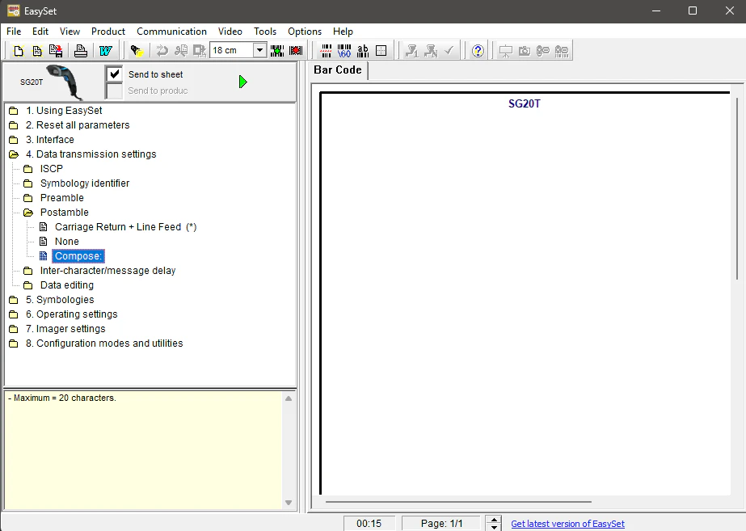

Résolution du conflit Ctrl+J avec le scanner SG20T
Prérequis
Pour reproduire ma méthode de résolution, vous aurez besoin des éléments suivants. J'ai utilisé l'outil officiel de Honeywell (qui a racheté Intermec) pour modifier les paramètres bas niveau du scanner.
- Un scanner Intermec SG20T connecté en USB.
- Le logiciel EasySet d'Intermec. Je l'ai téléchargé depuis le portail de support technique Honeywell. J'ai aussi utilisé cet article d'assistance officiel.
- Un navigateur basé sur Chromium (Brave, Chrome) pour constater le problème initial.
Comprendre la cause racine (HID et CR+LF)
J'ai identifié que le problème ne venait ni de mon application React, ni du navigateur, mais de la configuration d'usine du scanner. Le SG20T émule un clavier (HID) et envoie par défaut un suffixe Carriage Return + Line Feed (CR+LF) après chaque scan.
Dans un environnement de bureau, cela valide la saisie. Mais dans un navigateur Chromium, le caractère LF (Line Feed) est interprété comme le raccourci clavier Ctrl+J, ce qui a pour effet d'ouvrir l'onglet des téléchargements à chaque scan.
CR. J'ai écarté l'option None car elle nécessitait une validation manuelle, et j'ai retiré le LF qui déclenchait le raccourci.
Création d'un postamble personnalisé
Après avoir installé et lancé EasySet, j'ai connecté le scanner et sélectionné le modèle SG20T. J'ai ensuite navigué dans l'arborescence jusqu'à 4. Data transmission settings puis cliqué sur Postamble.
C'est ici qu'il y a un piège classique : les préréglages standards sont verrouillés. Sélectionner None supprime toute validation (obligeant à appuyer sur Entrée), et Carriage Return + Line Feed provoque le bug. J'ai donc dû créer un suffixe sur mesure :
- Au lieu de choisir un préréglage, j'ai cliqué sur le bouton Compose (ou Compose Postamble).
- Dans la fenêtre d'édition, j'ai ajouté uniquement CR (Carriage Return).
- J'ai validé la composition en cliquant sur OK.

Génération et envoi au matériel
Une fois la commande personnalisée composée, j'ai généré le code-barres de configuration via le bouton Generate Barcode (ou l'icône dédiée dans la barre d'outils).
J'ai ensuite scanné ce code-barres avec le SG20T pour enregistrer la nouvelle configuration dans sa mémoire. Le scanner a émis un bip de confirmation, validant la prise en compte du suffixe CR seul.
Sécurisation logicielle (Optionnelle)
Bien que la reconfiguration matérielle ait résolu mon problème, j'ai ajouté une sécurité dans mon application React. Cela permet d'intercepter les événements si un autre scanner (ou un utilisateur) envoie un caractère de fin non désiré.
const handleKeyDown = (event) => {
// Interception de la touche Entrée (13) ou Line Feed (10)
if (event.key === 'Enter' || event.keyCode === 13 || event.keyCode === 10) {
event.preventDefault(); // Bloque le comportement par défaut (ex: Ctrl+J)
// Logique de validation du scan
console.log('Scan validé:', inputElement.value);
}
};